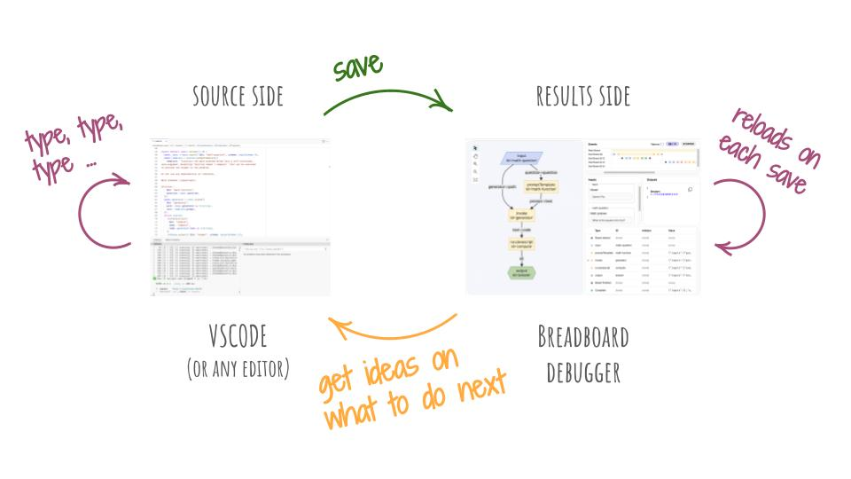
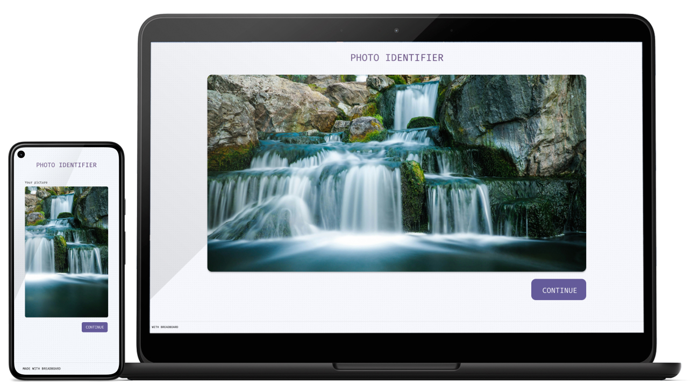

Breadboard
A Generative AI Prototype Framework
Make Anything
Breadboard lets you design sophisticated Generative AI experiences. Build complex workflows visually, free from API wrangling.
Debug On the Fly
Start making boards and see them visualized in real time.
Flexible Kits
No need to reinvent the wheel. From AI to webcam capture, we’ve got you covered.

Open Source
Want to contribute? Feel free! Breadboard is completely open source on GitHub.
The Happy Path
If you're eager to start making boards with Breadboard as quickly as possible, here's a yellow brick road that will take you there. It's not quite a tutorial, but more like a step-by-step onboarding guide with some of the best practices baked in.
Generate Web Apps
Made something awesome? Share it with others and let them play with it immediately!
